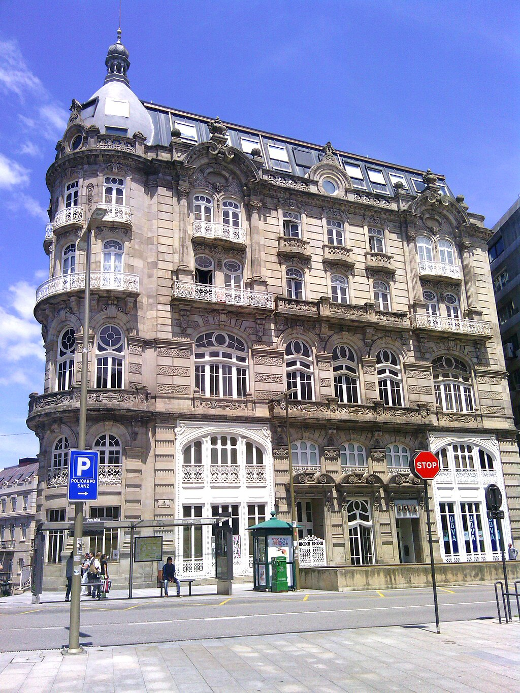

El Centro de Vigo y su Arquitectura
El centro de Vigo es un escaparate arquitectónico que refleja la transformación de la ciudad durante el siglo XX, destacando los estilos modernista y racionalista en edificios icónicos.
La Influencia del Modernismo
El modernismo en Vigo surge a principios del siglo XX, impulsado por arquitectos como Jenaro de la Fuente Domínguez, quien diseñó obras que combinan funcionalidad y ornamentación única.
Este estilo se caracteriza por el uso de líneas curvas, elementos decorativos vegetales y geométricos, y fachadas elaboradas que reflejan el auge económico de la ciudad. Ejemplos emblemáticos son los edificios de la Plaza de Compostela y calles aledañas.
Entre los edificios destacados se encuentra el Bonin, un claro ejemplo del esplendor modernista en Vigo.
El Racionalismo y la Evolución Urbana
En las décadas siguientes, el estilo racionalista marcó la arquitectura del centro de Vigo. Este movimiento arquitectónico, influido por las corrientes europeas del funcionalismo, dio prioridad a diseños simples y estructuras prácticas.
- Fachadas sobrias y sin excesos decorativos.
- Uso de materiales modernos como hormigón y cristal.
- Diseños orientados a la funcionalidad y el entorno urbano.
Los edificios de este estilo se distribuyen por el centro de Vigo, destacando en calles como la Gran Vía, donde la modernidad se integra con la tradición.